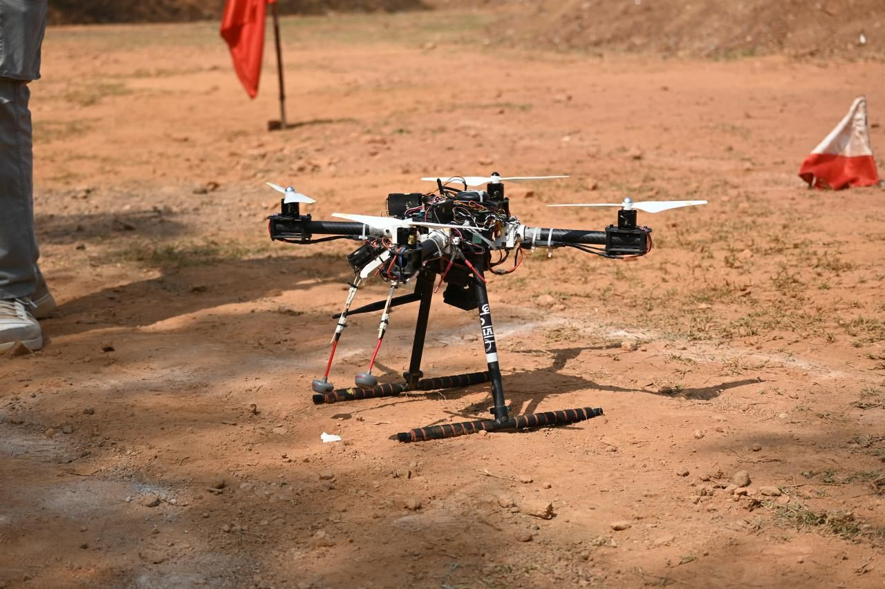
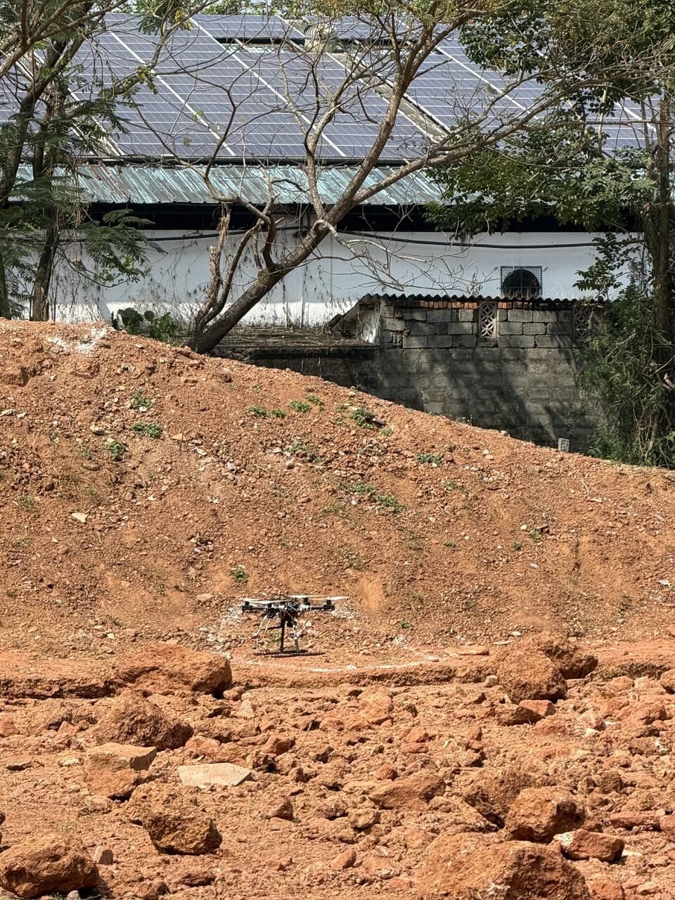
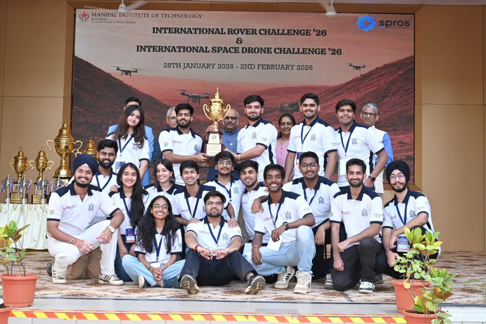

← Projects / Case study 05
🥈ISDC 2026 · 1st Runner-Up
Garud.Built light.Built to fly.
Team MARS's drone for the International Space Drone Challenge 2026: a carbon-fibre frame, additively manufactured parts, and motors and propellers sized from thrust calculations.
01 The drone
From the bench to the sky.



02 In action
In the air.

The result1st Runner-Up.

1st Runner-Up.
2nd of 20.
International Space Drone Challenge 2026, SPROS · MIT Manipal.
My role
Head of Administrative Affairs.
On Garud I was Head of Administrative Affairs for the Team MARS drone team in 2025–26. The team developed the platform in SolidWorks and ANSYS, with propulsion sized from thrust calculations.